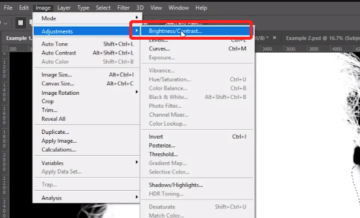
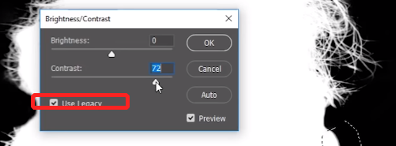
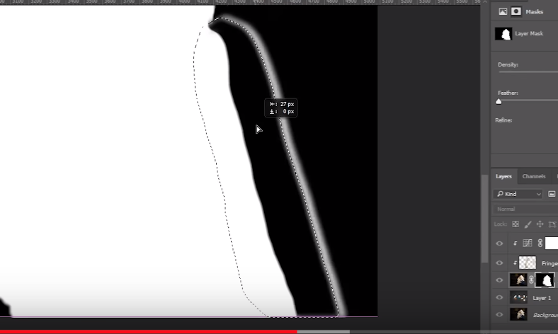
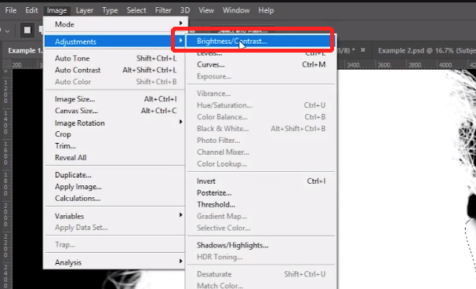
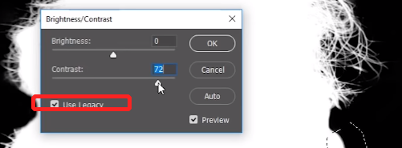
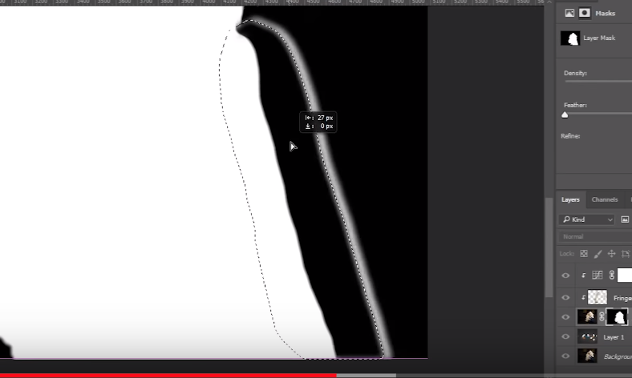

抠图边沿平滑处理 in Photoshop
使用选区工具或者其他选择工具将主体抠出后，常常会发现边沿有锯齿样的过渡，在一些情况下，我们希望边沿平滑，可以配合模糊工具和对比度调整工具可以调整蒙版来使过渡平滑。
选区工具选中边缘，filter - blur - Gaussian blur，选择较大的值：
调整对比度，使边缘清晰:


根据情况将选取向里移动，使外边的部分不被包含在内:

使用选区工具或者其他选择工具将主体抠出后，常常会发现边沿有锯齿样的过渡，在一些情况下，我们希望边沿平滑，可以配合模糊工具和对比度调整工具可以调整蒙版来使过渡平滑。
选区工具选中边缘，filter - blur - Gaussian blur，选择较大的值：
调整对比度，使边缘清晰:


根据情况将选取向里移动，使外边的部分不被包含在内:
